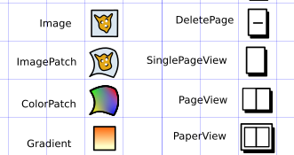
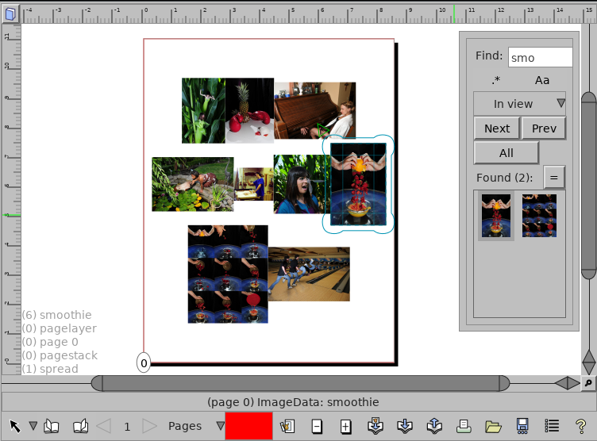

DTP, and experimental vector graphics tools
Version 0.097
News
30 August 2020
Quarantine updates from the zone
Thanks to coronavirus among other things, I suddenly find myself with some free time, some of which I've spent working on Laidout. Mostly I've finally had enough continuous time to fix various nuts and bolts that have been bugging me for a long time. In particular:
- Improved SVG importer and gradient fills SVG importing is now considerably better. Paths with gradient fills can now be imported, with the gradient fills becoming a special child object of the path object. Since the gradients are child objects, you can also layer up many different fill gradients. Gradient objects also now have various ways to fill parents (currently only path parents), including pad, reflect, and repeat spread methods. This, along with variable width lines can all be imported and exported with svg, including exports to Inkscape's powerstroke path effect. You can see gradients in action here! Still to do is implementing svg-esque stroke fills, but for now, only main fill is implemented.
- Icon Generation during build is 200 times faster  When compiling, making the icons now takes 3 seconds, instead of about 10 minutes! This has been bugging me for years, and thanks to the improved SVG importer, this can now be done with Laidout itself. Previously, it required a script that called Inkscape to extract individual icons from master SVG files that contain a couple hundred icons. This process took a very long time, as it required Inkscape to start up for each and every icon.
- New scale and rotate indicators.
The object tool has new indicators for when you click on something,
and drag the mouse with control (scaling), or control+shift (rotating). They now allow numerical
input for your precision needs, and also angle snapping for rotation. Still to do is incorporate
this mechanic wherever it is used, not just the object tool.
- Empties. Ability to create empty group objects, to use as an easy base for objects that are actually built from node graphs. Speaking of:
- Path nodes. New path generation nodes to create rectangles, circles, or even math functions as y=f(x) or p = x(t),y(t). 
- Find interface. Now there's a roughed out panel that lets you search for objects with a google-esque pattern, or a regex.
- Flexible page range input. Now when importing and exporting, instead of having a single start and end for ranges, you can instead specify something like "2-5, 10-15, 20:-1", to select the ranges 2-5, 10-15, and 20-(the end). A range like "5-2" will export pages in order 5,4,3,2.
- Dedicated paper size window. After seeing a post about Gimp's new document dialog, where if you put in "1:2" in a width or height field, it auto computes that width or height according to that aspect ratio and the other value! That is such an amazing thing, I had to incorporate it into the paper window.
- Paper group snapping. The paper group interface now has snapping to other already placed papers, making it much easier to snap papers exactly next to each other.
{kind=link}
More to come!
...assuming the virus, societal collapse, or eviction doesn't kill me!
20 July 2019
Laidout AppImages
Thanks to probonopd, Laidout now has continuous AppImage builds! These will be built whenever there is a new change, letting people try out the cutting edge version without having to compile it themselves. Just a reminder this is for the development version of Laidout, so it might be a bit unstable.
See here to try it out!
8 June 2019
Libre Graphics Meeting Recap
This year's Libre Graphics Meeting in Saarbrücken, Germany has finished. There are always a lot of interesting talks, meetings, and other random conversations about everything concerning making art with open source software, and this year was no different.
One big announcement was Inkscape 1.0, or at least the application of the git tag live at the meeting. You can't download 1.0 directly off Inkscape's website yet. The tagging is a kind of abstract developer convenience, but just trust me, it's a major milestone. Congratulations to Inkscape!
Speaking of milestones, Darktable turned 10 years old. Really I didn't realize it had been around for so long. Almost as long as Laidout! Darktable is a great way to mass edit photos, making it easy to apply a ton of high bit depth effects on large numbers of photos all at once. Although, just about every time I use it, I end up spending what seems like a really long time trying to figure out where the final "export" button is that actually does the exporting, as Darktable loves big masses of controls filled with tiny text.
There was a great talk about a color mesh interface from Pieter Barendrecht, for use with svg, and maybe Inkscape soon? A big problem with meshes is that when editing, they quickly become an unbearable, dense tangle of mesh outlines. This new interface allows local subdivision of only the parts of the mesh you want to subdivide, making the ui much less cluttered and easy to work with. He also demonstrated an interface for editing diffusion curves, a very interesting method of defining complex color fields with a few simple curve points.
One very interesting development is a new curve type from Raph Levien, famous for spiro curves, among other things like a brand new font editor project. This new curve, like his older spiro curves, potentially reduces the clutter of editing bezier curves with handles, and provides nicer and easier methods of producing smooth curves. I had not included his older spiro curves in Laidout due to its incompatibility with the LGPL that part of Laidout's path tool uses, but not long ago, he revised the license to Apache2 or MIT, which is great news. This new license type also applies to the new curve type. So now, I look forward to adding this new curve to Laidout.
Raph, with Colin Rofls and others, is also involved with making a 2-d UI toolkit native to Rust, that uses the GPU for rendering. This seems like a natural progression for a widget toolkit, as shaders and other creation tools normally found in 3-d software have a lot of potential for 2-d graphics production.
One new project was ommpfritt by Pascal Bies, which elevates cloning and other effects to being first class objects that affect their child objects, allowing somewhat easy specification of procedural modeling for 2-d vector graphics. This allows things like clearly structured template objects, where you can define an abstract arrangement, create many instances of this arrangement maybe based on a big list of data loaded via a python script, like a mail merge for instance. Then you are able to change just the "template", and have changes propagate to all the imported instances, avoiding the need to manually adjust those instances one by one. Some kind of similar template functionality is something Laidout needs as well! That would make master pages easy.
One workshop I attended was about Blender's DNA system, which theoretically allows extreme levels of forward and backward file compatibility. Essentially, a description of the entire Blender low level data structure is saved with each blend file. This allows any version of Blender to at least load and save every bit of data in any blend file, past, present, and future. In practice, the user interface or custom scripts still need to know what to do with the data to really make use of that in a meaningful way, but having the potential for such data preservation can be useful. This was quite unique when written decades ago, and remains quite unique today. A nearly empty Blender scene still means a somewhat large file since it stores the whole data model description, but Blender files tend to be large, complicated, and not meant for realtime network transfer anyway, so that file size overhead is very acceptable.
A file format approach I've taken in Laidout is to allow the file format description to be exported directly from the runtime (with laidout --file-format). This makes it easier to match a file to its format, rather than needing to hunt for it on a website somewhere. This file format description is meant to be parsed by humans that might be responsible for programming converters, and not currently meant to be directly parsed by machines. Blender's DNA takes the approach of keeping the underlying data model very simple, rooted primarily in basic, well known data types, plus you don't even need the runtime to figure out what is in a file you come across. The DNA system is also a big part of what makes Blender files load so quickly, since there is very little difference between how the data is stored on disk, and how it is stored in memory. In summary, Blender never fails to impress.
Speaking of workshops, thanks to everyone who came to my Comic Book Workflows workshop! My own takeaway is that I really need to play around with Krita more. I hadn't known what Krita's filter masks were all about, for instance. I also gave a tour of the various tools in Laidout. Some of these tools I haven't really worked on in years, so it strikes me I need to do some work polishing Laidout's tool set, rather than blasting ahead with new tools instead. I'll do that right after I finish adding the new spiro curve type, as well as.. oh never mind.
There were lots of other talks, that hopefully soon you will be able to watch online if you missed them. Keep an eye out on the LGM site for those, and also make plans to travel to Rennes, France for LGM 2020!
23 May 2019
Gif to flipbook
Just in time for Libre Graphics Meeting, here's a tutorial about how to make a physical flipbook based on an animated gif using Laidout. This uses a new GraphicsMagick based image loader, which makes it easy internally to load subimages from the gif.
11 May 2019
Comic Book Workflow Workshop
I hope you can come to this year's Libre Graphics Meeting in Saarbrücken, Germany, May 29 to June 2. I'll be giving a workshop about comic book workflows with open source software. For instance, we'll talk about methods to tag objects to be used in a comic parallax panel, like pictured. The tortoise clearly represents Laidout's rate of development.
14 April 2019
Development Update
This year's Libre Graphics Meeting will be in Saarbrücken, Germany, May 29 to June 2. I'll be giving a workshop about comic book workflows with open source software. We'll discuss best methods and software for making comic books, from the sketching and illustration phase to the printing phase, whether actual print or the web, using a variety of software (including Laidout). To that end, here are a couple of new features in development that may help.
-
Clip paths
You may now apply editable clipping paths around objects. Attach and detach paths that clip the objects by selecting a path and the object, then right click to choose how to clip. The clipping path once applied can also be edited in place. If you select two paths, then the context menu gives you the choice of which should clip the other.
Related to clipping, and also new is a better tracking of how objects stretch over onto other pages. Now, when an object crosses page boundaries in the Page View, the Singles and Paper views will now properly show the clipped objects that overlap with the current page. At the moment, only objects on pages immediately adjacent will display correctly, so crazy polyhedron unwrappings that are several pages across do not (yet) overlap correctly in Paper views.
Click here for full size
-
HTML Image Gallery Export
This is a new exporter that lets you immediately export your book pages to a static html file. Previously in my own work, this was a completely different, finicky step I needed to go through to publish comics to the web. Now with this, directly from within Laidout, I can render and output page images with thumbnails right into a static html gallery. You may define your own html template to accept your images as well.
25 November 2018
Laidout 0.097 Released!
At long last, Laidout 0.097 is now released! Three years since the last release is really not that long compared to the age of the Earth, and to show for it, we now have:
- Node Tool
At the moment, the node tool only lets you change Laidout object transforms, but this tool will, in the fullness of time, become more integrated into many features of Laidout, to allow easier editing of parametric objects, and potentially animation. It is also a testbed for a new plugin backend by way of Gegl based nodes to allow access to a variety of image processing abilities in a convenient node based interface.
- Save menu
Previously, the save button only saved. Now that button is a menu that lets you Save, Save As, Save a copy, Save a copy with an incremented number, Save as a template, or Save as the default template. Also in this menu are some settings to control automatic backup settings, to auto save after a specified time. - General debugging and backend developement
Numerous bugs are fixed, and fresh new bugs introduced, for instance by using Harfbuzz and Freetype for the text tools. This allows much greater font support internally, though much work still needs to be done in Laidout to adapt the new text framework to export nicely to various file formats.
20 May 2018
Libre Graphics Meeting Recap
At this year's Libre Graphics Meeting, I’m happy to say node based interfaces had a strong presence. For instance, Neil Smith demonstrated Praxis Live, including live music through a mix of code and nodes. Antonio Roberts performed “live noding” with nodes in Pure Data, manipulating 3-d structures together with music in real time.
After this meeting, which included interesting talks with devs from Gimp, Inkscape, and others, Laidout now has many more things on it's node to-do list! Speaking of to-do lists, thanks to everyone who came to my node workshop, we found several bugs which are now all fixed!
In other news, I hope to have a new "stable" version of Laidout released within a finite amount of time. I've narrowed down my task list to about 50 or so bugs and usability issues to clear up before then. Hopefully this will only take a few weeks, as long as I can stick to that list and not implement new tools instead!
Read old news
What the hell?
Laidout is desktop publishing software built from the ground up with imposition in mind. Currently one may arrange pages into various cut and folded impositions, such as a booklet, or even a dodecahedron. You can fill pages with images, gradients (linear, radial, and mesh), mesh transformed images, engraving-like fill objects, and some basic text. Export with varying degrees of success to Svg, Scribus, Pdf, and more.
See the Laidout Features page for more detail about what it can do now, the Roadmap for what it's supposed to do eventually, and this (incomplete) comparison to a few other desktop publishing and vector graphics programs.
It is in the "Mostly does what I want on my machine" stage of development. I try to have a new "stable" release once in awhile, at least when various other projects don't eat all my time, which seems to happen a lot lately. "Stable" in this context means that it is only slightly less buggy then the raw development branch.
I have been using Laidout to lay out my comics into books since 2006. So, one out of 7 billion people agree that Laidout might actually be useful! For example, one can make small booklets by chopping up tabloid sized paper (11x17 inches). With a fold, two cuts, and stapling, one can make three cute little 5.5 x 5.6 inch books.
Many more features are planned, like such non-essentials (to me anyway) as flowed text boxes. Who needs text when a picture is worth a thousand words?
Laidout, together with the Laxkit backend, aims to make a well documented, very modular, expandable, and configurable desktop publishing program, with an emphasis on developing tools not commonly found in other programs, as long as they are useful. A side project is to foster the ability to share these tools with other software.
System Requirements
Laidout only works on variations of Linux for now. It should work on Macs after a small amount of hacking, but I don't have access to a Mac to make it so.
Download
"Stable"
The current release is Version 0.097.
You can help turn Laidout into something stable (without quotes) by posting issues to the issue tracker at github, or by dropping me a line.
In any case, you can get Laidout in source code form, or as a deb package for debian based amd 64bit systems. The main 0.097 download area is here.
laidout-0.097.tar.bz2 (the source code)
laidout_0.097_amd64.deb (binary, should work on Debian Unstable)
laidout_0.097_ubuntu1804_amd64.deb (binary, should work Ubuntu 18.04 LTS)
If there is a problem with icons, you can use prebuilt icons from laidout-icons.zip.
Compiling from "stable" source
If you download the source code form, you must compile and install from the command line. First, as root or with "sudo", install dependencies:
And then:
cd laidout-0.097
./configure --prefix=/usr/local
make
make install
Some of the dependencies above (from mesa-common-dev on) are for the unstable polyhedron unwrapper. You don't need them if you disable the opengl based unwrapper by passing --nogl to the configure line above. The unwrapper exists also in a standalone version in laidout-0.097/src/polyptych.
Instead of compiling as above, you can build a deb package from the source tar like the following. You'll need to have dpkg-dev and fakeroot packages installed. This will create an installable deb package. If you try this and it doesn't work, please let me know. It is supposed to work!!
cd laidout-0.096
dpkg-buildpackage -rfakeroot
Development
The unstable development branch of Laidout is continuously built into AppImages to test out here.
If you think you might like to help develop Laidout, please see this page.
Development source code is currently hosted at github. You can browse the git repository here, or you can grab a copy from the repository with this command:
To actually compile from this git source, see the further instructions in the Compiling From Development Git section of the README.
Contact
For most things, you can post an issue at Laidout's issue tracker at github.
Currently, the only developer is Tom Lechner, and he has been hacking away at Laidout to help make his artwork.